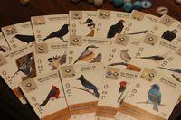
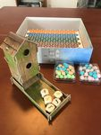
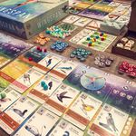

Wingspan

Summary
You are bird enthusiasts—researchers, bird watchers, ornithologists, and collectors—seeking to discover
and attract the best birds to your network of
wildlife preserves. Each bird extends a chain of powerful combinations in one of your habitats
(actions). These habitats focus on several key aspects
of growth:
- Gain food tokens via custom dice in a birdfeeder dice tower
- Lay eggs using egg miniatures in a variety of colors
- Draw from hundreds of unique bird cards and play them
The winner is the player with the most points after 4 rounds. If you enjoy Terraforming Mars and Gizmos,
we think this game will take flight at your table.
- https://boardgamegeek.com/boardgame/266192/wingspan
Game Info
Publishing Info
- Designer: Elizabeth Hargrave
- Artists: Ana Maria Martinez Jaramillo, Natalia Rojas, Beth Sobel
- Publishers: Stonemaier Games, 999 Games, Delta Vision Publishing, Feuerland Spiele, Ghenos Games,
Lavka Games, Ludofy Creative, Maldito Games,
Matagot, MINDOK, Rebel, Surfin' Meeple China
Categories
- Genre:
- Strategy, Family
- Players:
- 1-5
- Playing Time:
- 40-70 Minute
- Ages:
- 10+
- Complexity:
- 2.37/5
Reviews
A stellar game and easy entry into my top five. When you've topped 100 plays in the first six months,
it's no doubt that the playability
is off the charts. Add to it, that the artwork is incredible, and you have a real winner.
- Gavmastaphlex
So much fun! Beautiful artwork-everyone I’ve played this with has absolutely loved it. Not too steep of a
learning curve to start playing.
- Jpwine
I think this is a very solid game in all aspects except in production, where it is outstanding. It is quick
to play and easy to understand,
so it is a good option to introduce people to board games. It has many of the popular mechanics: engine
building, resource management, a
kind of drafting, etc. So it is a very good way to learn them. For experienced gamers it might feel too
shallow, but I find it very entertaining
and complex enough to keep me interested during the whole game. I also really like the solo mode, which is
very easy to track and provides you
some competition instead of being just a score rank.
- Shockper
Images


